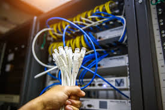
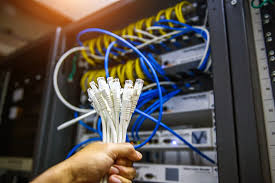

La fibra óptica es el medio de transmisión guiado más avanzado, ya que utiliza pulsos de luz para transmitir información. Keiser y Agrawal destacan su importancia en las telecomunicaciones modernas.
Este medio ofrece altas velocidades de transmisión, gran capacidad de datos y una baja susceptibilidad al ruido electromagnético. La fibra óptica puede ser monomodo o multimodo, dependiendo de la aplicación. Según Forouzan, su uso es fundamental en redes troncales y de larga distancia.
 
